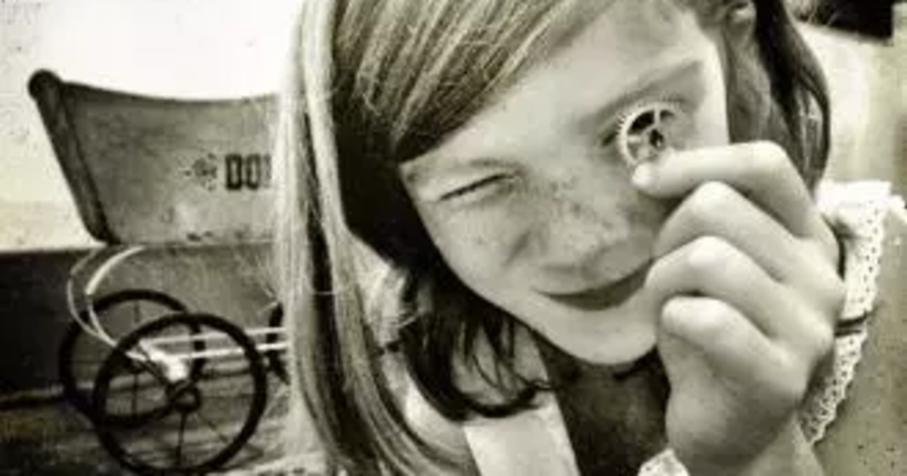

Trivia
The Grace Hooper Fullstack Academy was established in 2016 in New York City. It provides immersive coding education for womem. There are currenly over 2000 graduates from this academy.
Hopper earned a PhD in math from Yale -- a rare accomplishment for anyone at the time. Only 1,279 math PhDs were awarded in the 72-year period from 1862-1934, the year Hopper received hers.
She is credited with coining the terms “bug” and “de-bug” as related to computer errors. One day a computer failure stumped Hopper and her team until she opened the machine and found a moth inside! Taping the moth into her log book, she wrote, “first actual bug found.”
Her nickname was “Amazing Grace” thanks to her high naval rank and myriad accomplishments in math and computer science.
She was a big believer in mentorship, once saying, “The most important thing I've accomplished, other than building the compiler, is training young people. They come to me, you know, and say, 'Do you think we can do this?' I say, ‘Try it.’ And I back 'em up.”